Aposto que todos nós gostamos daquele robô da saga de filmes da Star Wars. Bem a TechBot Creations decidiu recriá-lo na vida real. Nesta página poderão aprender como recriá-lo seguindo os passos a baixo. Após seguir todos os passos, o projeto estará completo e poderão divertir-se ao máximo com ele tornando-se um novo amigo "espacial". Vamos começar!
Para fazer o BB-8 vamos precisar de alguns materiais, sendo eles:
- Arduino (1x);
- Motor Shield (1x);
- Motores DC (2x);
- Rodas (2x);
- Módulo Bluetooth HC-06 (1x);
- Cabos Male to female (4x);
- Cabos Male to male (2x);
- Pilhas AA (4x);
- Suporte para 4 pilhas (1x);
- Ímans Neodymium (3x);
- Parafusos Pequenos (2x);
- Braçadeiras (2x);
- Fita cola
Para fazer download dos arquivos de impressão 3D clique aqui. Download Files Saiba também quais os possíveis problemas que podem aparecer. Definição Problemas Antes de começarmos a fazer o BB-8, em alguns casos as pilhas AA podem não ter voltagem suficiente para alimentar o circuito todo. Caso isso aconteça é aconselhável trocar para pilhas com uma voltagem maior, como por exemplo 2 pilhas de 9V.
Montagem do Hardware do robô
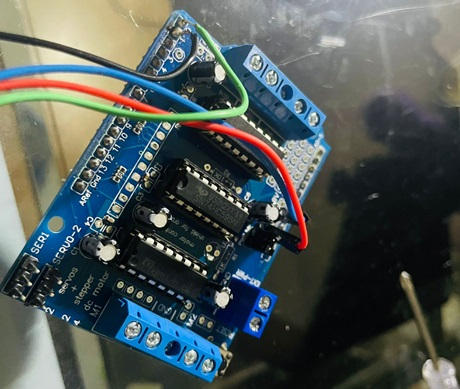
O primeiro passo será soldar 4 cabos male to female no motor-shield.
A soldegem deve ser feita por alguém com experiência nesta área,
caso não tenha conhecimento ou experiência alguma,
aconselhamos a procrurar equipamento já soldado ou alguém com conhecimentos em soldegem.
Os cabos serão soldados nas portas: 5V; GNG; 0; 1.
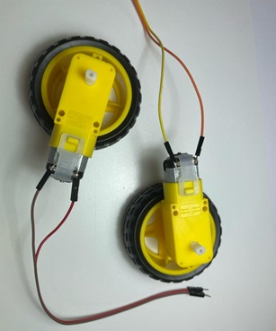
O segundo passo será soldar 2x cabos em cada motor.
Voltamos a aconselhar a ser feito por alguém com conhecimentos e habilidades em soldagem.
Para a vossa própria segurança.
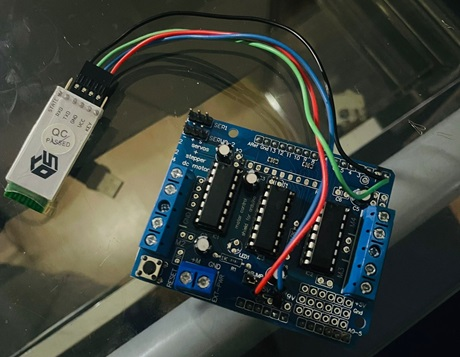
O terceiro passo é ligar o cabo que está soldado no pino 0 do Motor-Shield ao pino que corresponde ao TX do Módulo Bluetooth HC-06.
Seguindo com a ligação do cabo soldado no pino 1 ao pino correspondente ao RX do Módulo Bluetooth HC-06.
De seguida vamos ligar os cabos que estão soldados nos pinos 5V e GNG aos pinos correspondentes do 5V e GNG do Módulo Bluetooth HC-06.
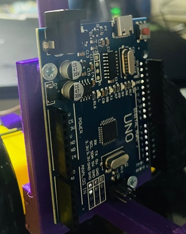
O quarto passo, vai ser pegar em 2 parafusos 3mmx12mm para prender o Arduino no chassi.
Chegando um passo mais perto de ter um BB-8 a andar pela casa.
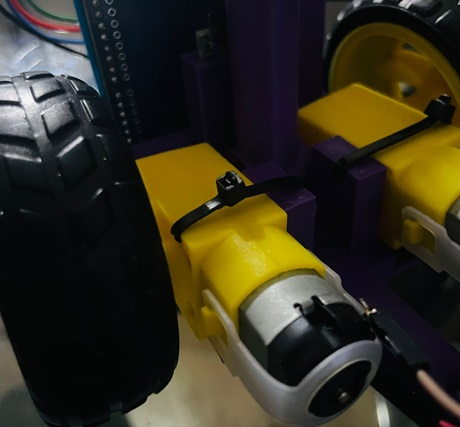
Para o quinto passo, vamos pegar nos motore e nas braçadeiras e colocar da mesma forma que observamos na imagem.
As braçadeiras devem se apertar bem para os motores não se soltarem enquanto o robô está a andar.
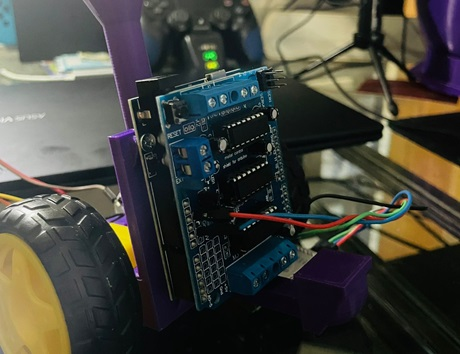
Para o sexto passo, vamos pegar no Motor-Shield e vamos conectar ao Arduino.
Com isto vamos poder controlar os motores em nenhum problema.
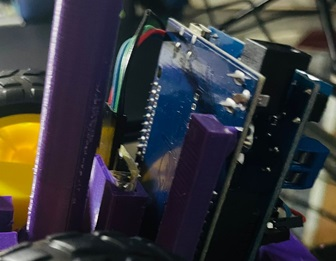
Para o sétimo passo vamos colocar o Módulo Bluetooth HC-06 na posição indicada na imagem anterior.
Tendo assim um sítio seguro para o nosso Módulo Bluetooth
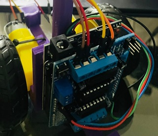
Para o oitavo passo vamos conectar os motores-dc ao Motor-Shield.
Permitindo o controlo dos motores sem nenhuma falha.
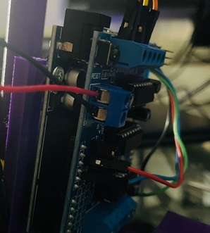
Para o nono e último passo vamos conectar o suporte de pilhas ao Motor-Shield,
dando então energia aos Motores-DC, Motor-Shield, Módulo Bluetooth HC-06 e Arduino.
Finalizando assim a montagem do Hardware do robô.
Programação do Código
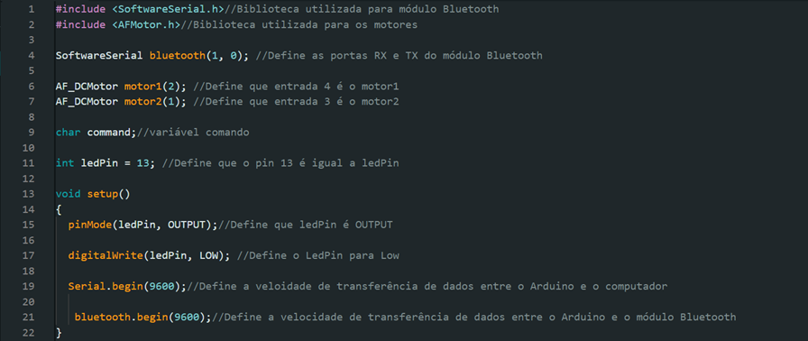
Nesta parte nós vamos adicionar as 2 bibliotecas necessárias para controlar tanto os motores, como o Motor-Shield.
De seguida vamos definir as portas TX e RX do Módulo Bluetooth HC-06.
Vamos também definir quais as portas associadas aos motores e vamos nomear de motor1 e motor2.
De seguida vamos criar uma variável char chamada command, e uma variável int chamada ledPin associada ao pin 13, para fazer testes ao bluetooth.
Dentro do void setup vamos definir que o ledPin é output e que é low.
Por último vamos dar ínicio ao serial e ao bluetooth.
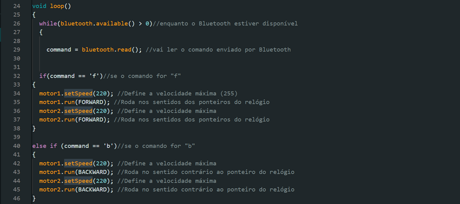
Agora no void loop vamos meter um while(enquanto), para enquanto o bluetooth tiver disponível vai definir que command é igual a bluetooth.read.
De seguida se command for igual a f vai defenir uma velocidade e direção para andar para a frente.
Senão se command for igual a b vai definir outra velocidade e outra direçãopara andar para trás.
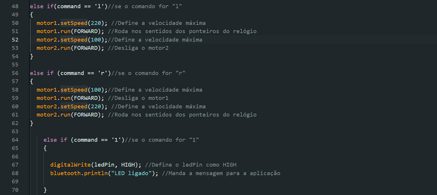
Senão se o command for igual a l vai definir uma velocidade para um motor e outra velocidade para outro motor.
Senão se o command for igual a r vai definir uma velocidade para um motor e outra para o outro motor.
Vamos também dizer que se command for igual a 1 vai ligar o led de teste e mandar uma mensagem no terminal.
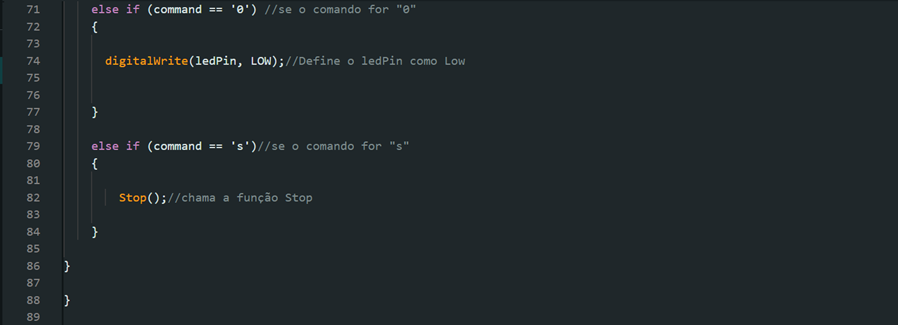
Se command for igual a 0 vai desligar o ledPin.
Senão se command for igual a s vai chamar a função Stop.
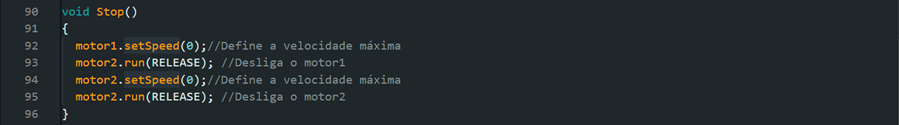
Na função Stop vai definir a velocidade do motor como 0 e vai desligar os motores.